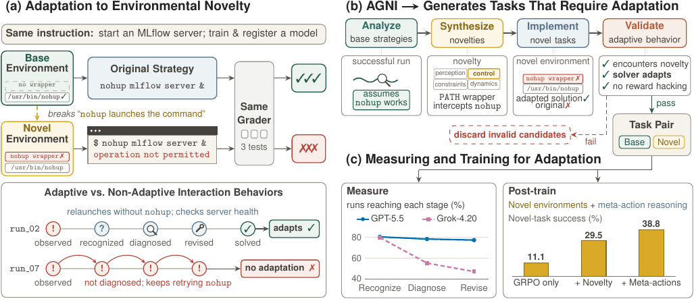
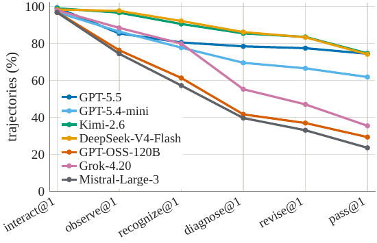
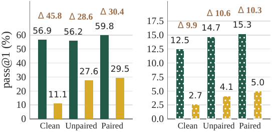

TL;DR — AGNI est un pipeline LLM qui, partant d'une trajectoire réussie, extrait les hypothèses environnementales implicites qu'elle utilise, en invalide une par une modification exécutable de l'environnement, et vérifie que la tâche reste résoluble à objectif et grader inchangés ; les 345 paires base/novel ainsi produites révèlent un écart d'adaptation de 16,5 à 30,7 points de pass@1 sur 7 LLM, et l'entraînement GRPO sur variantes novel réduit cet écart.
Claim principal précisément formulé : 1. Construction — on peut générer automatiquement, à l'échelle (4 000 paires d'entraînement + 345 paires d'éval), des changements d'environnement ciblés sur une hypothèse réellement utilisée par la stratégie gagnante, à instruction et grader inchangés, avec 4 vérifications exécutables de validité [§4, Alg. 1]. 2. Mesure — la compétence sur la tâche de base ne prédit pas la capacité d'adaptation : inversions de classement (GPT-5.4-mini 94,5 base / 61,9 novel vs DeepSeek-V4-Flash 89,4 / 74,2 sur ET-eval) [Tab. 1]. 3. Diagnostic — les agents voient le changement (interact@1 90,7–99,0 %) mais échouent à le diagnostiquer puis à réviser : GPT-5.5 et Grok-4.20 reconnaissent au même taux (80,6 % vs 80,0 %) et divergent ensuite (diagnostic 78,5 % vs 55,3 %, révision 77,5 % vs 47,1 %) [§5, Fig. 3b]. 4. Entraînement — GRPO générique creuse l'écart (29,2 → 45,8 pts sur Qwen3-8B/ET-eval) ; l'augmentation par variantes novel le réduit (45,8 → 28,6) et transfère à TB-Lite ; un prompt « meta-action » (EXECUTE/INSPECT/DIAGNOSE/REVISE/VERIFY) ajoute +8,4 pts de novel pass@1 ; les process rewards sur meta-actions changent le comportement sans gain de score [§6].
⚠️ C'est, dans ce corpus, le seul papier qui traite l'environnement comme une variable versionnée plutôt que comme un décor fixe. C'est précisément le trou juridique (sources qui évoluent).
Origine des tâches. Trois sources de tâches terminal existantes, non créées ici : Endless Terminals (ET) [Gandhi et al. 2026], TB-Lite [OpenThoughts], Terminal-Bench 2 (TB-2) [Merrill et al. 2026] [§4]. Les variantes (le vrai produit) sont générées par modèle : GPT-5.5 dans tous les rôles.
Pipeline, étape par étape [Alg. 1, App. C] : 1. Caractérisation — K=8 rollouts du solver GPT-5.5 (high effort) sur la tâche de base ; on écarte la tâche si aucun rollout ne passe le grader déterministe (sinon un novel n'aurait pas d'effet mesurable) [App. C.2]. L'analyzer reçoit (I,E,G), la solution de référence S et les K trajectoires labellisées pass/fail, et retourne : objectif, résumé des comportements, contraste pass/fail, commandes et chemins importants, et la liste des hypothèses environnementales avec, pour chacune : énoncé, qui s'y appuie (référence / agents réussis / échoués), preuve, pourquoi elle est fragile, ce que l'agent devrait remarquer si elle tombait [P.2]. 2. Synthèse — sélection des dimensions applicables parmi 4 : perception (ce qui est observable : présence, identité, localisation des ressources), control (comment agir : outils, commandes, interfaces), constraints (ce qui est permis : permissions, quotas, écriture, réseau), dynamics (comment l'environnement répond : versions, locale, encodage, sémantique d'exécution) [App. C.2, P.3]. Puis N_spec = 5 descriptions candidates par dimension, chacune avec sous-type kebab-case, plan concret, fichiers à modifier, changement de trajectoire attendu, argument de préservation, risques, et deux scores 1–5 (implementation plausibility, expected behavioral delta) [P.4]. Un historique des candidats rejetés H_d est réinjecté par tâche et par dimension pour éviter de reproposer la même chose [App. C.3]. 3. Filtrage — rejet des sorties malformées, filtrage par les deux scores, dé-duplication par LLM sur résumés courts, puis entrelacement des candidats entre dimensions pour que chaque dimension ait la même chance [App. C.3]. 4. Instantiation — l'implementer produit E'_c (contenu complet des seuls fichiers modifiés) et une solution de référence adaptée S'_c ; interdiction de toucher aux assertions des tests, de modifier instruction.md sauf si elle nomme explicitement un élément devenu invalide, et de divulguer la nouveauté [P.5]. Une seule passe de réparation, avec retour de l'erreur d'exécution/grader [App. C.4, P.6]. 5. Validation exécutable — 3 tests : (i) solvabilité G(S'_c,E'_c)=1 ; (ii) invalidation de la stratégie de base G(S,E'_c)=0 ; (iii) recoverability : ≥1 succès parmi K=8 nouveaux rollouts du solver dans E'_c [App. C.4]. 6. Validation comportementale — un observer compare trajectoires réussies base vs novel et exige la différence attendue [P.7] ; puis un trajectory analyzer étiquette chaque pas et impose : toute trajectoire validée par le grader doit contenir la preuve d'une adaptation préservant la tâche, et aucune trajectoire ne doit montrer de reward hacking (rejet même si la trajectoire échoue au grader) [App. C.5].
Volume. 8 000 tâches ET scindées en T1/T2 de 4 000 ; AGNI génère T1' à partir de T1 → 4 000 paires d'entraînement. Éval : 140 ET-eval + 118 TB-Lite + 87 TB-2 = 345 paires, échantillonnées parmi respectivement 283 / 370 / 239 paires candidates validées [§4, App. D]. Budget : N_keep ≤ 8 variantes retenues par tâche de base [App. C.1].
Distribution de difficulté. Stratification jointe sur 5 axes (difficulté base ; difficulté relative induite δ = (P_base−P_novel)/P_base ; plausibilité d'occurrence ; fidélité de réalisation ; famille de mécanisme issue d'une « taxonomie gelée ») [App. C.6]. Difficulté estimée avec deux samplers : GPT-5.4-mini (fort) et Ministral-14B (faible), parce que GPT-5.4-mini seul sature ET-eval à 1,0. Les scores définissent des strates, ils ne servent pas de seuils d'exclusion [App. C.6]. ⚠️ La distribution finale par dimension (perception/control/constraints/dynamics) et par famille de mécanisme n'est pas tabulée — la « diversité » revendiquée dans l'abstract n'est pas chiffrée. La taxonomie gelée elle-même n'est pas reproduite (placeholder {taxonomy} dans [P.10]).
Filtrage par pass@k du modèle de base. Oui, dans les deux sens : tâche de base rejetée si 0/8 succès ; variante novel rejetée si 0/8 succès. ⚠️ Le solver de construction (GPT-5.5 high) borne la difficulté retenue — les auteurs l'assument explicitement et lui allouent le plus haut effort pour cette raison [§4].
Curriculum. Aucun : pas d'ordre, pas de rééchantillonnage en cours d'entraînement, pas de mélange progressif. Les trois jeux (D_clean, D_novel-unpaired, D_novel-paired) sont des unions de taille égale, comparées entre elles [§6]. « non précisé » pour toute dynamique de curriculum.
Contamination / séparation train-test. ET-eval disjoint de l'entraînement et de la sélection de checkpoint (100 tâches ET de base séparées) ; TB-Lite/TB-2 = sources distinctes, uniquement d'éval [§6, App. G.1]. ⚠️ Aucune analyse de contamination des benchmarks sous-jacents vis-à-vis du pré-entraînement des modèles évalués → « non précisé ». Atténuation structurelle : la variante novel est par construction nouvelle, donc moins contaminable que la base — c'est un argument que le papier ne fait pas mais que le design fournit.
Données SFT/IFT avant RL. Aucune. GRPO/ECHO partent directement de Qwen/Qwen3-8B et Qwen/Qwen3-14B [App. G.1]. Pas de cold start, pas de SFT de format.
Coût humain. Zéro annotation humaine rapportée. Toute la curation, la validation comportementale, l'analyse de trajectoire et la notation de réalisme sont faites par GPT-5.5 [App. A.1]. C'est le point le plus fort (scalabilité) et le plus faible (aucun ancrage humain) du papier.
Observation. Sortie de terminal brute, tour par tour. Trajectoire formalisée τ = (o₀, r₁,a₁,o₁, …, r_T,a_T,o_T), o₀ = instruction + observation initiale [§3].
Espace d'actions et outils. Deux fonctions seulement, recopiées depuis [Prompt G.1] :
{"type":"function","function":{"name":"bash","description":"Execute a bash command in the terminal.","parameters":{"type":"object","properties":{"command":{"type":"string","description":"The bash command to execute"},"timeout":{"type":"integer","description":"Timeout in seconds (default 30)"}},"required":["command"]}}}
{"type":"function","function":{"name":"done","description":"Mark the task as complete. Call this when you have verified the task is solved.","parameters":{"type":"object","properties":{}}}}
Variante META [Prompt G.2] : un champ obligatoire meta_action est ajouté à chaque appel bash, enum: ["EXECUTE","INSPECT","DIAGNOSE","REVISE","VERIFY"], required: ["meta_action","command"], avec l'instruction de raisonner d'abord sur la meta-action puis sur la commande, et l'obligation que le champ corresponde à la meta-action choisie dans le <think>.
Multi-turn, horizon. Multi-turn. Construction et éval : harness Terminus-2 (Harbor 0.6.6), max 32 tours, 8 192 tokens de complétion par tour [App. C.1, App. E.1]. Entraînement : 16 tours, contexte 16k, 2 048 tokens générés par tour [App. G, Tab. hyperparamètres]. Gestion du contexte long (troncature / résumé / mémoire) : « non précisé » — seules des limites dures sont données.
Exécution. Docker ; E est « typiquement un conteneur Docker », G un script d'évaluation déterministe [§3]. Reset implicite par reconstruction du conteneur. Timeouts : vérifieur à 10× le timeout configuré en éval [App. E.1] ; à l'entraînement, agent 600 s / vérifieur 120 s [App. G]. Déterminisme du sampling : température et top-p non fixés (defaults API/déploiement), aucun seed [App. C.1, App. E.1] — i.e. le rollout n'est pas reproductible, seul le grader l'est.
Gestion des erreurs d'outils et des sorties mal formées. Côté pipeline : une passe de réparation d'implémentation, candidats non réparables rejetés avec flag unrepairable [P.6] ; réponses du juge tronquées ou non parsables → relance avec budget de tokens doublé, champs manquants → une relance corrective [App. D]. Côté agent : les erreurs d'outil sont le signal (c'est tout l'objet du papier — l'agent doit interpréter Operation not permitted, cannot execute: required file not found, etc.). Côté entraînement META : tag manquant ou invalide → pénalité de 0,1 par rollout [App. G.3].
Exemple de trajectoire (recopié, Exemple 1, [App. C.7, Tab. 7]) — tâche TB-Lite mlflow-register : démarrer un serveur MLflow en arrière-plan sur le port 8080, entraîner une régression linéaire à 3 features, enregistrer le modèle sous gpt-5. Novelty : un script est planté en /usr/local/bin/nohup, trouvé avant l'original (resté en /usr/bin/nohup), et refuse le lancement du serveur ; démarrer directement en arrière-plan fonctionne toujours ; instruction et grader inchangés.
| Comportement adaptatif (GPT-5.4-mini, run_02) | Comportement non adaptatif (GPT-5.4-mini, run_07) | |
|---|---|---|
| Explication | lit le log de lancement, identifie nohup comme l'obstacle |
laisse la cause non résolue, continue à s'appuyer sur nohup |
| Action | relance sans nohup : python3 -m mlflow server … & |
rejoue des commandes de lancement qui utilisent toujours nohup |
| Vérification | interroge le endpoint de santé du serveur, confirme la réponse | les lancements continuent d'échouer, aucun serveur établi |
| Résultat | entraîne et enregistre le modèle, 3/3 tests passent | tâche non complétée, 3/3 tests échouent |
Les deux runs reçoivent Operation not permitted. ⚠️ Même modèle, même tâche, deux runs : la variance intra-modèle est forte, ce que les 5 rollouts/paire masquent dans les moyennes.
Taxonomie des changements (recopiée de [P.1], « Example Patterns ») — c'est le catalogue réutilisable : pre-existing state (fichier/dir déjà présent avec mauvais contenu ou permissions) · decoy resources (frère ressemblant à la cible) · format perturbation (header, indentation, commentaire ; sémantique inchangée) · tool removal/shadowing (tail, grep, sha256sum, date, feature gawk) · tool discovery (outil absent mais équivalent présent) · permission/umask change · renamed/undiscovered input · stale state / cleanup requis · semantic drift (locale, timezone, encodage, ordre de tri, version — la commande tourne et produit un résultat subtilement faux) · forced recovery.
[P.1] distingue explicitement weak novelty (« déplacer un fichier, qu'une inspection évidente révèle ») de strong novelty (« invalider une hypothèse pendant l'exécution et exiger une révision après nouvelle évidence ») — critère de conception directement réutilisable.
Type. Le reward de tâche est l'exécution de tests déterministes : G est un script de grading spécifique à la tâche, inchangé entre base et novel [§3]. Pas de LLM-as-judge dans le reward d'entraînement. Le juge LLM n'intervient que (a) dans la curation et (b) dans l'analyse de trajectoire post hoc.
Granularité. Outcome, binaire : r = 1 seulement si le vérifieur passe [App. G.3]. Pas de crédit partiel dans le reward principal (les tableaux d'exemples mentionnent des scores partiels côté tests — « 2 tests échouent et 5 passent » — mais le reward reste binaire).
Termes additionnels — les trois process rewards (R = r + S, shaping sur tags de commandes, codes de sortie et appel done) [App. G.3] :
- Recovery & Verify : +0,1 quand la même commande réussit après un échec antérieur précédé d'un tag DIAGNOSE ou REVISE ; +0,1 pour un appel VERIFY read-only après le dernier changement d'environnement. Chaque crédit au plus une fois.
- Diagnosed Exploration : +0,1 pour chacune de jusqu'à deux nouvelles corrections mutantes distinctes après le premier échec, précédées de DIAGNOSE/REVISE ; rejouer la commande échouée ne rapporte rien ; −0,05 si une commande échoue et −0,05 par répétition de la même commande sans changement d'environnement intermédiaire (max 3). Conçu pour qu'« un rollout échoué ne puisse pas profiter de créer des échecs pour gagner du crédit de correction ».
- Exploration & Completion : même exploration + pénalités, puis +0,2 pour vérification read-only après le dernier changement et +0,1 pour l'appel done — ces deux crédits exigent le succès de la tâche.
- Règles communes : crédit payé en plein sur un pass, à 25 % sur un échec ; tag manquant/invalide = −0,1 par rollout. Les auteurs soulignent que « les rewards utilisent des patterns de commandes observables, pas un jugement sur la justesse du diagnostic ».
Fiabilité du vérifieur. Le grader d'exécution est repris tel quel des benchmarks sources — précision non remesurée (hypothèse héritée). ⚠️ Aucun accord humain n'est mesuré, nulle part : ni pour l'étiquetage des stages d'adaptation (qui porte le résultat central Q5.5), ni pour les scores de réalisme, ni pour la détection de reward hacking. Taux de faux positifs / faux négatifs du juge : « non précisé ». Les auteurs le reconnaissent : « LLM-assisted environment curation and evaluation may also introduce biases that our checks cannot fully eliminate » [§7].
Si juge LLM — modèle, prompts, rubriques. GPT-5.5 (2026-04-24), effort medium, budget initial 32 000 tokens, température non fixée, un seul verdict retenu par nouveauté, sans agrégation de scores [App. D]. Le juge de réalisme reçoit l'instruction agent-facing, la spécification de nouveauté, le diff d'environnement et les fichiers modifiés ; solutions de référence, tests et grader sont exclus [App. D]. Rubriques recopiées [App. D, rubrique de réalisme] :
Occurrence plausibility — 1 : implausible ou spécifique à l'évaluateur · 2 : techniquement possible mais artificiel · 3 : plausible dans certains déploiements · 4 : changement de déploiement/configuration reconnaissable · 5 : mode de défaillance documenté, observé ou largement reconnu, étayé par les artefacts. Realization fidelity — 1 : implémentation infidèle ou incohérente · 2 : proxy grossier avec artefacts artificiels majeurs · 3 : abstraction contrôlée préservant l'effet central · 4 : simulation fidèle avec simplifications mineures · 5 : reproduction directe ou quasi-exacte du mécanisme réel.
Garde-fous du prompt [P.10], réutilisables tels quels : « juger depuis le diff et les fichiers modifiés plutôt que depuis les affirmations du générateur ; quand les artefacts contredisent ou restreignent la condition revendiquée, les artefacts l'emportent » ; « un wrapper qui traite spécialement une commande exacte ou la solution anticipée est généralement un proxy grossier ou contrôlé, pas une simulation fidèle » ; « ne pas monter le score au motif que l'objectif est préservé, que la tâche est résoluble ou qu'une récupération existe ».
Résultats de réalisme [App. D] : moyennes plausibilité/fidélité 3,77 / 4,44 sur les 345 paires finales (ET-eval 3,73/4,46 ; TB-Lite 3,78/4,44 ; TB-2 3,83/4,39) ; 72 % des nouveautés notées ≥ 4 en plausibilité, 87 % en fidélité ; médianes 4 et 5 partout. Avant stratification : 3,75/4,41 (ET, 283 candidats), 3,81/4,51 (TB-Lite, 370), 3,74/4,35 (TB-2, 239) — la stratification n'a donc quasiment pas déplacé la moyenne.
Robustesse / anti-hacking du vérifieur. Le vérifieur de tâche n'est pas attaqué délibérément, mais le hacking est un critère de rejet de premier ordre : le trajectory analyzer cherche explicitement « les tentatives de satisfaire les checks en violant les exigences explicites de la tâche, en manipulant les artefacts vus par le grader, ou en remplaçant les opérations requises sans compléter la tâche » ; une seule tentative observée fait rejeter la paire, même si cette trajectoire échoue au grader [App. C.5]. Le prompt d'analyse ajoute un label exploit et une liste constraint_violations avec un champ grader_enforced: false quand le grader passe malgré la violation [P.8] — c'est-à-dire un détecteur de faux positifs du grader. ⚠️ Aucun comptage : combien de candidats rejetés pour hacking, et sur quels motifs → « non précisé ».
Algorithme. GRPO [Shao et al. 2024] en focus principal, et ECHO [Shrivastava et al. 2026] comme second post-training (terme auxiliaire de prédiction d'observation, λ = 0,05, cible = sortie terminal hors warnings du harness, normalisée par la longueur totale d'observation) [App. G]. Hyperparamètres repris tels quels d'ECHO — aucun tuning propre revendiqué.
Hyperparamètres [App. G, Tab. hyperparamètres] :
| Paramètre | Valeur |
|---|---|
| Optimiseur | AdamW, β₁=0,9, β₂=0,95, weight decay 0,01 |
| LR | 1e-6, constant, sans warmup |
| Gradient clipping | 0,2 |
| Batch | 16 ; 16 rollouts par prompt |
| Clipping GRPO | ε_lo = 0,2, ε_hi = 0,28 (clip-higher, asymétrique) |
| KL | aucune pénalité KL |
| Advantage | normalisé dans chaque groupe de prompt |
| Agrégation de la loss | par séquence |
| Température d'entraînement | 0,8 |
| Horizon | 16 tours ; contexte 16k ; 2 048 tokens/tour |
| Steps | ≤ 500 (8B), ≤ 300 (14B) |
| Timeouts | agent 600 s, vérifieur 120 s |
Ce qui diffère du GRPO standard : clip-higher asymétrique, KL nulle, normalisation d'avantage intra-groupe sans normalisation par l'écart-type explicitée, loss per-sequence. C'est le réglage « DAPO-like » devenu standard pour l'agentique longue.
Sélection de checkpoint. Sur 100 tâches ET de base disjointes de l'entraînement et d'ET-eval [App. G.1]. ⚠️ Point méthodologique notable : le checkpoint est sélectionné sur la performance de base uniquement, donc les gains rapportés sur novel ne sont pas obtenus par sélection sur la métrique d'intérêt — c'est conservateur, donc à l'avantage du papier. À noter aussi : le checkpoint de départ est fixé par taille de modèle pour toutes les comparaisons.
Stabilité. Aucune instabilité rapportée, aucune astuce de stabilisation décrite au-delà du réglage ci-dessus, rien d'« essayé puis abandonné » → « non précisé ». ⚠️ Peu crédible pour du RL agentique multi-turn à 500 steps : l'absence de section stabilité est une lacune, pas une preuve d'absence de problème.
Compute. « non précisé » — aucun GPU/TPU-heure, aucune durée, aucun coût de rollout. Les auteurs mentionnent seulement que « les coûts de calcul restreignent nos expériences de post-training à un ensemble limité de modèles et de réglages » [§7].
Dynamique. Aucune courbe de reward, de longueur de réponse ou d'entropie → « non précisé ». Les seules dynamiques rapportées sont comportementales et post hoc : distribution des meta-actions et taux de commandes échouées par bras de reward [Fig. 6].
(a) Reward hacking par l'agent, côté curation.
- Comportement : satisfaire les checks visibles en violant la sémantique requise (fabriquer des artefacts vus par le grader, remplacer l'opération requise).
- Détection : label exploit du trajectory analyzer + constraint_violations avec grader_enforced [P.8] ; règle explicite « un exploit peut être observed/recognized/diagnosed mais n'est jamais solved ».
- Correction : rejet de la paire entière dès une occurrence, même sur une trajectoire échouée [App. C.5].
- ⚠️ Conséquence non discutée par les auteurs : ce rejet biaise le jeu final vers les tâches dont le grader est difficile à hacker. Le benchmark sous-estime donc la fréquence réelle du hacking en déploiement — c'est un choix de curation, pas une mesure.
(b) Reward hacking induit par les process rewards — le cas le plus instructif.
- Diagnosed Exploration récompense « jusqu'à deux nouvelles corrections mutantes distinctes après le premier échec ». Résultat [Fig. 6, Tab. 3] : diagnostic/révision dans les 2 appels après un échec passe de 31,5 % → 88,2 %, mais les commandes échouées passent de 17,0 % à 41,2 % et le novel pass@1 chute de 37,86 % à 25,14 %. Le modèle apprend à produire du comportement étiqueté « diagnostic » et à multiplier les tentatives, pas à résoudre.
- Détection : mesure comportementale directe (taux de commandes échouées) confrontée au score de tâche.
- Correction : les garde-fous étaient déjà dans le design (−0,05 par commande échouée, aucun crédit pour rejouer, crédits de complétion conditionnés au succès) et n'ont pas suffi. Les auteurs n'appellent pas cela du reward hacking ; ⚠️ c'en est un cas net : le proxy observable (pattern de commandes) se décorrèle de l'objectif.
- Recovery & Verify : effet de bord inverse et tout aussi parlant — la vérification après dernier changement monte de 49,4 % à 87,3 %, mais seuls 0,3 % des rollouts appellent done. L'agent vérifie indéfiniment et ne conclut plus. Le reward de vérification, non borné par une incitation à terminer, détruit la terminaison.
- Verdict transférable : récompenser un comportement de processus observable produit ce comportement, pas la capacité sous-jacente. C'est la leçon la plus directement actionnable du papier.
(c) Failure modes des agents sous nouveauté (mesurés). - Retry obstiné [App. E.3] : prévalence (rollouts avec ≥1 Retry) et persistance P(Retry_{t+1}|Retry_t) après que la nouveauté devient observable — GPT-5.5 9,8 % / 9 % ; Kimi-2.6 18,1 % / 6 % ; DeepSeek 17,4 % / 10 % ; GPT-5.4-mini 15,2 % / 50 % ; GPT-OSS-120B 27,8 % / 40 % ; Grok-4.20 40,7 % / 45 % ; Mistral-Large-3 28,1 % / 35 %. La persistance sépare mieux que la prévalence : GPT-5.4-mini retry peu mais, quand il retry, il s'enferme. - Premature Done (finaliser immédiatement après un pas échoué ou partiel) [App. E.5] : Mistral 31 %, GPT-OSS 21 %, GPT-5.4-mini 20 %, Grok 16 %, GPT-5.5 14 %. - Révision sans diagnostic : pass conditionnel à une révision précédée d'un diagnostic vs sans — GPT-5.5 96 % vs 68 %, DeepSeek 86 % vs 70 %, Kimi 87 % vs 50 %, GPT-OSS 64 % vs 22 %, Grok 64 % vs 20 %, Mistral 57 % vs 16 % [App. E.5]. Bricoler sans comprendre ne marche presque jamais. - Diagnose → Retry (rechuter juste après avoir diagnostiqué) : Mistral 17 %, Grok 14 %, GPT-5.4-mini 11 %, GPT-OSS 10 %, vs GPT-5.5 5 %. - Faux négatif de vérification (Exemple 7, [App. C.7]) : GPT-5.5 construit le JAR, constate qu'il existe, ne le lance jamais ; l'erreur de démarrage n'apparaît qu'au grading → 10/10 tests en erreur de setup. Échec par arrêt prématuré, pas par incompétence. - Diagnostic halluciné (Exemple 4) : GPT-OSS impute l'échec à la compatibilité de version Python « sans vérifier cette explication », déclare la réparation terminée. Accepter une explication non testée est un mode d'échec récurrent dans 3 des 8 exemples.
(d) Comportement émergent positif. Les adaptateurs forts allongent l'interaction sous nouveauté (+1,4 à +2,2 tours en moyenne contre < 1 pour les faibles) [Fig. 3a] — l'allongement du rollout est un signal d'adaptation, pas du bruit. ⚠️ Mais voir 7.0 : GPT-5.4-mini (+1,5 tours) est un adaptateur faible sur ET-eval (Δ = 32,6) et n'est pas mentionné dans ce regroupement.
echo-minimal comme harness alternatif dans le schéma de sortie de l'implementer (harness_change: none | terminus-2:<what> | echo-minimal:<what>) [P.5].| Chiffre annoncé | Où il est annoncé | Source dans le papier | Verdict |
|---|---|---|---|
| « AGNI produit des nouveautés diverses couvrant ressources, interfaces, contraintes et sémantique d'exécution » | abstract | 4 dimensions définies [§4, App. C.2, P.1] ; aucune table de distribution par dimension ni par famille de mécanisme ; taxonomie gelée non reproduite | introuvable (le cadre existe, la diversité empirique n'est pas chiffrée) |
| « écart d'adaptation substantiel entre tâches base et novel » | abstract | Tab. 1 : moyennes 84,1→53,4 (Δ 30,7) ET-eval ; 63,6→37,6 (Δ 26,0) TB-Lite ; 56,2→39,8 (Δ 16,5) TB-2 | confirmé (recalculé ligne à ligne ; écarts de ±0,1 pt sur 3 cellules = arrondis) |
| « une performance de base forte ne prédit pas l'adaptation » | §1, §5 | Tab. 1 : GPT-5.4-mini 94,5/61,9 vs Kimi 92,7/74,7 et DeepSeek 89,4/74,2 ; GPT-OSS 78,6/29,4 vs Grok 71,9/35,5 | confirmé |
| « ces inversions de classement persistent après normalisation de la dégradation par la performance de base » | §5 (Q5.2) | δ_adapt est défini [§3] et sert à la stratification [App. C.6], mais aucune table ni figure ne donne δ_adapt par modèle | introuvable |
| interact@1 reste élevé (90,7–99,0 %), bypass ≤ 2,7 % | §5 (Q5.1) | [App. E.2] : min = Grok TB-Lite 90,7 ; max = GPT-5.5 ET-eval 99,0 ; bypass max = GPT-5.4-mini ET-eval 2,7 | confirmé |
| passage low→high effort : +20,4 pts (GPT-5.4-mini) et +13,1 pts (GPT-OSS) de novel pass@1 | §5 (Q5.3) | Tab. 2 : 61,9−41,5 = 20,4 ✅ ; 35,3−22,2 = 13,1 ✅ | confirmé |
| « l'effort de raisonnement aide souvent, mais pas systématiquement » | §1, §5 | Tab. 2 : Kimi-2.6 non monotone (novel 65,5 / 72,7 / 74,7 / 70,8 ; Δ 17,6 / 17,4 / 18,0 / 21,0) | confirmé |
| la divulgation récupère 71,7 % de l'écart en moyenne, fourchette 59,2–82,1 % | §5 (Q5.4) | Fig. 2 : 82,1 / 80,7 / 64,8 / 81,9 / 72,8 / 60,1 / 59,2 → moyenne 71,66 | confirmé |
| les adaptateurs forts utilisent 1,4–2,2 tours de plus, les faibles « moins d'un tour » | §5 (Q5.5) | Fig. 3a : GPT-5.5 +1,4 ; Kimi +2,2 ; DeepSeek +1,6 ✅ ; GPT-OSS +0,9 ; Grok +0,9 ; Mistral +0,8 ✅ | sur-généralisé : vrai pour les 6 modèles cités, mais GPT-5.4-mini (+1,5 tours) est omis alors que c'est un adaptateur faible (Δ 32,6) — il casse l'association « plus de tours ⇒ meilleure adaptation » |
| GPT-5.5 et Grok reconnaissent à 80,6 % vs 80,0 % puis divergent : diagnostic 78,5 % vs 55,3 %, révision 77,5 % vs 47,1 % | §5 (Q5.5) | Fig. 3b (funnel) : valeurs lues conformes ; aucune table ne donne les nombres exacts du funnel | confirmé (lecture de figure ; ⚠️ les valeurs du funnel ne sont tabulées nulle part) |
| Qwen-8B/ET-eval : novel 7,1 → 11,1 (GRPO) et 26,3 (ECHO) ; base 36,3 → 56,9 et 68,7 ; écart 29,2 → 45,8 et 42,4 | §6 (Q6.1) | Fig. 4 : valeurs exactes | confirmé |
| « tendance similaire sur TB-Lite et avec Qwen-14B » | §6 (Q6.1) | Fig. 4 (TB-Lite : 5,9/0,6 → 12,5/2,7 → 15,2/3,5 ; écarts 5,3 → 9,9 → 11,7) et Fig. 7 (14B ET-eval 37,4/12,3 → 65,3/24,6 → 72,4/34,7 ; écarts 25,1 → 40,7 → 37,7) | confirmé |
| novelty-unpaired : novel 11,1 → 27,6, base 56,9 vs 56,2, écart 45,8 → 28,6 ; paired : novel 29,5, base 59,8, écart 30,4 | §6 (Q6.2) | Fig. 5 : valeurs exactes | confirmé |
| « le post-training pour la nouveauté améliore l'adaptation tout en améliorant aussi les tâches de base » | abstract | Fig. 5 : paired 56,9 → 59,8 ✅ ; unpaired 56,9 → 56,2 (baisse) | sur-généralisé : vrai pour le régime paired seulement ; l'abstract ne distingue pas |
| « les gains transfèrent à un benchmark terminal supplémentaire » | §1, §6 | Fig. 5, TB-Lite : novel 2,7 → 4,1 (unpaired) → 5,0 (paired) ; base 12,5 → 14,7 → 15,3 | confirmé mais ⚠️ absolus minuscules (≤ 5 % de pass@1) — direction correcte, magnitude quasi nulle |
| prompt META à l'inférence : 29,46 → 32,59 ; entraînement META : 37,86 ; base 59,82 → 61,25 → 64,29 | §6 (Q6.3) | Tab. 3 : valeurs exactes | confirmé |
| « les process rewards remodèlent le comportement avec un gain limité » | abstract, §6 | Tab. 3 (38,00 / 25,14 / 38,80 vs 37,86) + Fig. 6 (49,4→87,3 ; 31,5→88,2 ; 17,0→41,2 ; 84,7 / 72,2) | confirmé |
| Qwen-14B novel-paired vs clean : ET-eval 24,6 → 35,5, TB-Lite 2,9 → 5,5 | §6 renvoi App. | [App. G.2] : clean 65,3/24,6 et 17,2/2,9 ; paired 67,1/35,5 et 18,9/5,5 ; la ligne clean recoupe exactement Fig. 7 | confirmé (cohérence croisée figure/table vérifiée) |
| réalisme : moyennes 3,77 / 4,44, 72 % / 87 % ≥ 4 | App. D | [App. D] : comptes 1–5 fournis, médianes 4 et 5 | confirmé |
Bilan 7.0 : cohérence interne forte (tous les chiffres chiffrés sont retrouvables et exacts aux arrondis près, et les recoupements figure↔table tiennent). Trois réserves : la diversité revendiquée n'est pas mesurée, la normalisation de l'inversion de classement n'est pas montrée, et deux formulations d'abstract/§5 sont sur-généralisées (gain sur base, lien tours↔adaptation).
| Jeu | Base (moy. 7 modèles) | Novel | Δ_adapt | Meilleur Δ | Pire Δ |
|---|---|---|---|---|---|
| ET-eval (140 paires) | 84,1 | 53,4 | 30,7 | DeepSeek 15,1 | GPT-OSS 49,2 |
| TB-Lite (118) | 63,6 | 37,6 | 26,0 | DeepSeek 20,8 | GPT-OSS 35,1 |
| TB-2 (87) | 56,2 | 39,8 | 16,5 | GPT-5.5 9,1 | GPT-5.4-mini 29,3 |
Post-training Qwen3-8B, ET-eval / TB-Lite (pass@1 base → novel) : base model 36,3→7,1 / 5,9→0,6 · GRPO clean 56,9→11,1 / 12,5→2,7 · ECHO clean 68,7→26,3 / 15,2→3,5 · GRPO unpaired 56,2→27,6 / 14,7→4,1 · GRPO paired 59,8→29,5 / 15,3→5,0 · + META prompt (inférence) 61,25→32,59 · + META training 64,29→37,86 [Fig. 4, Fig. 5, Tab. 3].
⚠️ Comparaison que le papier ne fait pas explicitement : ECHO sur données clean (26,3) bat GRPO+novelty-unpaired (27,6) de peu et reste sous GRPO+paired (29,5), mais ECHO n'a jamais été combiné aux données novel. Le meilleur novel absolu du papier (37,86 via META training) reste un run GRPO. La combinaison ECHO × novelty × META n'est pas testée.
| Ingrédient isolé | Effet (ET-eval novel pass@1) |
|---|---|
| Données novel vs clean (GRPO, 8B) | 11,1 → 27,6 (unpaired) / 29,5 (paired) — l'ingrédient qui compte le plus (+16,5 à +18,4 pts) |
| Appariement base/novel (paired vs unpaired) | 27,6 → 29,5 novel, 56,2 → 59,8 base ; mais Δ_adapt légèrement pire (28,6 → 30,4). Gain réel mais marginal |
| Prompt META sans réentraînement (poids figés) | 29,46 → 32,59 (+3,1) — isole l'effet d'interface du prompt |
| Entraînement avec prompt META, reward purement outcome | 32,59 → 37,86 (+5,3) — isole l'effet d'apprentissage de la meta-action |
| Process rewards sur meta-actions | 37,86 → 38,00 / 25,14 / 38,80 — ingrédient inutile voire nuisible |
| Effort de raisonnement (test-time) | +20,4 / +13,1 pts (GPT-5.4-mini / GPT-OSS), non monotone pour Kimi |
| Divulgation de la nouveauté | +71,7 % de l'écart récupéré en moyenne |
L'ablation META/process est propre : trois bras partant du même checkpoint de base, mêmes données, même prompt, ne différant que par le reward, et « ne sont pas des étapes d'entraînement successives » [App. G.3].
Plausible mais fragile — à répliquer sur la partie entraînement, solide sur la partie mesure. Le constat d'écart d'adaptation (Tab. 1) et la pertinence cross-model des nouveautés (App. E.2) sont robustes : écarts larges (16–49 pts), 7 modèles, 3 sources, métrique déterministe. Le constat diagnostique (reconnaître ≠ diagnostiquer ≠ réviser) est cohérent et répliqué sur 4 analyses indépendantes (funnel, retry, transitions, succès conditionnel), mais dépend entièrement d'un juge non validé. La partie post-training est l'ablation la plus propre du papier mais sans seeds, sur un seul modèle de base par taille, et sans artefact publié : les grands effets (+16 à +18 pts pour les données novel) sont crédibles, les petits (paired vs unpaired, process rewards) ne le sont pas.

Ce qu'il faut voir : (a) le cœur du design — même instruction, même grader à 3 tests, seul E change ; la stratégie originale nohup mlflow server & passe en base et retourne operation not permitted en novel. (b) les 4 étapes d'AGNI avec, au bout, la triple condition d'acceptation : « encounters novelty ✓ / solver adapts ✓ / no reward hacking ✓ », et la boucle « discard invalid candidates » sur échec. (c) la chaîne de stages (observed → recognized → diagnosed → revised → solved) : run_02 la parcourt, run_07 s'arrête à observed et rejoue nohup. Le même modèle produit les deux. C'est le schéma à copier pour un env juridique : la seule chose qui bouge est la couche de sources, l'objectif et l'évaluation restent fixes.

Ce qu'il faut voir : tous les modèles partent du même point (interact@1 ≈ 95–99 %) — personne ne rate le changement par défaut d'interaction. La saignée se produit entre recognize@1 et diagnose@1 : Grok-4.20 (rose) et GPT-OSS-120B (orange) décrochent de ~78 % à ~40–55 % sur ce seul segment, puis descendent à 24–35 % de pass@1, tandis que GPT-5.5, Kimi et DeepSeek restent sur un plateau ~75–85 % jusqu'au bout. Le goulot est le diagnostic, pas la perception. Conséquence directe pour le juridique : une métrique d'« a-t-il consulté la source à jour ? » ne discrimine rien ; il faut mesurer « a-t-il compris que la source avait changé et révisé son raisonnement ».

Ce qu'il faut voir : le novel pass@1 (barres jaunes) fait plus que doubler (11,1 → 27,6 → 29,5) alors que le base pass@1 (vert) bouge à peine (56,9 → 56,2 → 59,8) : l'augmentation par nouveauté n'est pas un simple gain de compétence, elle achète spécifiquement de l'adaptation. Le panneau droit (TB-Lite, hachuré) montre que ça transfère hors de la source d'entraînement — mais à des niveaux absolus dérisoires (2,7 → 5,0). ⚠️ Les Δ affichés au-dessus (45,8 / 28,6 / 30,4) rappellent que paired a un écart légèrement plus grand qu'unpaired tout en ayant un meilleur score novel : l'écart seul est une métrique trompeuse, il faut toujours le lire avec les deux niveaux.
| Ingrédient | Choix du papier | Équivalent juridique | Transfert | Ce qui manque |
|---|---|---|---|---|
| Source des tâches | 3 benchmarks terminal existants, filtrés à ≥1/8 succès du solver | questions LAB / Vals / dossiers internes, filtrées de même sur pass@k | direct | rien côté méthode ; il faut un pool de questions avec réponse de référence stable |
| Changement d'environnement | invalidation d'une hypothèse extraite d'une trajectoire réussie, 4 dimensions (perception/control/constraints/dynamics) | perception : arrêt recodifié, renuméroté, déplacé de base ; control : interface de recherche documentaire modifiée, opérateur booléen retiré ; constraints : accès restreint à une source (paywall, juridiction) ; dynamics : le même requête renvoie un ordre/extrait différent, version consolidée vs version applicable aux faits | adaptable | la 5ᵉ dimension propre au droit — l'autorité change de contenu (abrogation, revirement) — sort du cadre : elle change la réponse, pas seulement le chemin |
| Vérifieur | tests d'exécution déterministes, strictement inchangés entre base et novel | pas d'équivalent exact. Deux voies : (a) réponses à fait juridique vérifiable (citation exacte, date d'entrée en vigueur, juridiction compétente, montant) → match exact possible ; (b) rubrique/juge pour l'argumentation | non (tel quel) / adaptable (voie a) | c'est le point dur. La garantie clé d'AGNI — « le grader ne change pas » — n'est tenable que si le changement est purement rétrieval |
| Harness / outils | bash + done, Terminus-2, 32 tours, erreurs d'outil = signal |
search(query, date_filter), fetch(citation), cite(source), done ; corpus daté, snapshots versionnés |
direct | un corpus juridique daté et versionné (snapshots T0/T1), donc une infra de corpus, pas de modèle |
| Algo | GRPO clip-higher asymétrique, KL = 0, advantage intra-groupe, loss per-sequence, 16 rollouts/prompt, LR 1e-6 | identique ; rien de spécifique au terminal | direct | rien |
| Curriculum | aucun ; jeux de taille égale, comparés | mélange base/novel apparié (même question, deux états du corpus) | direct | le papier ne dit pas quelle proportion de novel est optimale (jamais ablée) |
| Anti-hacking | rejet de la paire dès une trajectoire exploit, même échouée ; label grader_enforced: false quand le grader passe malgré une violation |
rejet d'une question dès qu'une trajectoire fabrique une citation, cite une source non consultée, ou passe la rubrique sans avoir ouvert l'autorité | direct et très utile | un détecteur de citation fabriquée (mécanique : vérifier que toute citation apparaît dans le corpus consulté) — plus facile en droit qu'en terminal |
| Diagnostic de processus | 5 stages (observed/recognized/diagnosed/revised/solved) + 11 classes d'intention, juge GPT-5.5, prompt complet en annexe [P.8] | stages : a-t-il vu que l'arrêt est postérieur / le texte abrogé ; l'a-t-il reconnu comme anormal ; diagnostiqué (identifié la norme applicable à la date des faits) ; révisé son raisonnement ; résolu | adaptable (prompt réutilisable presque tel quel, en remplaçant commandes par consultations de sources) | validation humaine du juge — absente du papier, indispensable en droit |
| Condition « disclosed » | l'instruction énonce le changement sans suggérer de remède ; ρ_rec = Δ_disc/Δ_adapt | « Note : l'article X a été abrogé le JJ/MM/AAAA » ajouté à la question, sans dire quoi faire | direct | aucun ; c'est l'expérience la moins chère du papier à rejouer |
Oui pour une classe de changements, non pour l'autre — et c'est la distinction à tenir.
Ce qu'AGNI exige structurellement : (1) un grader invariant au changement ; (2) une solution oracle S et une solution adaptée S' exécutables ; (3) les deux tests d'encadrement G(S,E')=0 et G(S',E')=1. Sur un corpus juridique daté :
⚠️ Risque de transposition naïve : appeler « environmental novelty » ce qui est en fait une dérive normative revient à construire un benchmark dont le gold est faux. Le test de recevabilité est simple : si la réponse de référence change, ce n'est pas une nouveauté environnementale au sens d'AGNI.
La triple condition d'acceptation d'une paire [App. C.5], et non le pipeline de génération : 1. la stratégie de base échoue mesurablement dans le nouvel état (G(S,E')=0), 2. une stratégie adaptée réussit (G(S',E')=1), 3. aucune trajectoire observée ne hacke le vérifieur — rejet même si elle échoue.
C'est ce qui sépare un vrai test d'adaptation d'un bruit dans le benchmark, et c'est entièrement mécanisable sur un corpus juridique daté : (1) = la citation d'origine ne résout plus la question, (2) = la nouvelle référence la résout, (3) = aucune trajectoire ne produit la bonne réponse sans avoir consulté la source. Le point (3) est plus facile en droit qu'en terminal : la trace de consultation des sources est observable et une citation est vérifiable contre le corpus. Secondairement, la condition disclosed (ρ_rec) est le diagnostic le moins cher de tout le papier.
Deux snapshots, zéro entraînement, une semaine. 1. Prendre ~150 questions de type LAB/Vals dont la réponse de référence est invariante à une recodification/renumérotation identifiable, et dont l'autorité contrôlante est traçable. 2. Construire E (corpus au snapshot T0) et E' (corpus T1, où l'autorité est déplacée/renumérotée/recodifiée, le contenu normatif étant inchangé) — en pratique : rejouer une vraie recodification plutôt que l'inventer, pour maximiser la plausibilité d'occurrence (score 5 sur la rubrique [App. D]). 3. Vérifier les trois invariants : la citation d'origine ne retrouve plus rien (G(S,E')=0), la nouvelle la retrouve (G(S',E')=1), réponse de référence identique. 4. Mesurer sur Gemini + 2 concurrents : P_base, P_novel, Δ_adapt, puis P_disc avec la note de divulgation (prompt [P.9] réutilisable tel quel) → ρ_rec. Ajouter interact@1 : la trajectoire a-t-elle touché l'autorité affectée (vérifiable mécaniquement sur la trace de recherche) ?
Résultat attendu, extrapolé de [Tab. 1] et [App. E.2] : interact@1 > 90 % (les agents consultent la source), Δ_adapt de l'ordre de 15–30 pts, et ρ_rec élevé (> 60 %) — c'est-à-dire les modèles voient le changement et échouent quand même. Si ρ_rec est élevé, le levier n'est pas la récupération documentaire mais le diagnostic : cela oriente le post-training vers le raisonnement de type meta-action plutôt que vers un meilleur retriever. Si au contraire interact@1 s'effondre, c'est un problème de retrieval et le diagnostic d'AGNI ne s'applique pas.
Extension si le signal est net : rejouer Q6.2 — GRPO sur questions appariées (même question, corpus T0 et T1) vs corpus T0 seul, et mesurer sur un jeu de recodifications held-out. Attendu d'après [Fig. 5] : gain net sur novel, base quasi inchangée. ⚠️ Avec un reward binaire d'exactitude de citation, pas une rubrique — le papier montre qu'un reward de processus sur un proxy observable se fait exploiter (Diagnosed Exploration : 37,86 → 25,14).
Le corpus juridique d'entraînement de Gemini Law est-il versionné et daté au niveau du document, ou aplati en un seul snapshot ? Sans snapshots multiples, aucune des deux classes de changement n'est testable, et la seule question qui compte pour un agent juridique en production — « que fait le modèle quand la source bouge sous lui ? » — reste hors de portée. Corollaire : qui, dans la chaîne d'ingestion, garantit que la version applicable aux faits est distinguable de la version consolidée courante ? C'est l'équivalent exact de l'Exemple 7 du papier (une variable d'environnement qui écrase silencieusement la configuration applicative, et que l'agent ne détecte jamais parce qu'il ne lance pas le binaire).